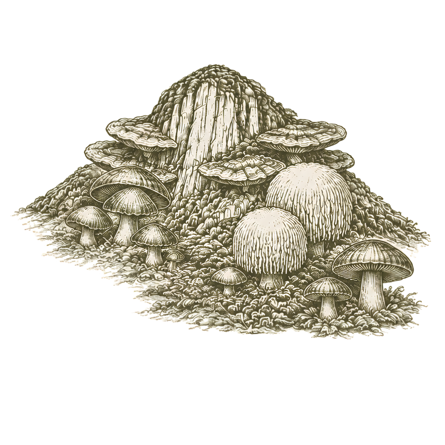

SIGUIENTE ACCIÓN
¿Qué tienes en la mano?
Escanea el QR del contenedor. Field OS traerá solo su identidad, último evento y acciones válidas.
Sábado · 18 de julio · Turno de cultivo
Identifica el objeto en mano, registra el hecho y vuelve al cultivo. Cada evento queda atribuido y seguro.

Escanea el QR del contenedor. Field OS traerá solo su identidad, último evento y acciones válidas.
ESTA SESIÓN
PARA REVISAR
MEMORIA DEL TURNO
DEMANDA → CAPACIDAD → LOTES
La demanda comercial se convierte en órdenes visibles, sin duplicar datos entre ventas y cultivo.
PRÓXIMOS 14 DÍAS
ORIGEN DE DEMANDA
Cada orden conserva su cliente, fecha prometida y lote comercial esperado. El plan cambia; la historia no.
RECETA APROBADA → BALANCE → EJECUCIÓN
Una sola función de cálculo valida el lote antes de pesar o descontar inventario.
RECETA VERSIONADA
ORDEN OP-260722-01
La ejecución crea un evento inmutable, bloquea la versión de receta y descuenta inventario por lote FIFO.
LECTURAS → REGLAS → EVIDENCIA
Lo medido, lo simulado y lo calculado nunca se confunden. Las incidencias se agrupan y conservan responsable y cierre.
CÁMARA 01
CÁMARA 02
INCUBACIÓN 01
ÚLTIMAS 12 HORAS
INCIDENCIA AGRUPADA
LOTE DE ORIGEN → MOVIMIENTO → COSTO
Cada kg conserva proveedor, lote, fecha, costo y consumo. La disponibilidad no es solo una cifra.
STOCK POR LOTE
DEL PEDIDO AL INSUMO
Un lote comercial puede recorrerse hacia atrás hasta cada cosecha, contenedor, receta e insumo.
TRAZA ACTIVA
RESULTADO DEL LOTE
NO CONFORMIDADES
HIPÓTESIS → EVIDENCIA → DECISIÓN → SOP
La experimentación usa la misma memoria operativa, pero nunca contamina la línea base de producción.
EXP-260629-ML-02
Hipótesis: reducir humedad inicial mejora colonización sin disminuir eficiencia biológica.
DECISIÓN PENDIENTE
La evidencia favorece 64%, pero una sola corrida no cambia el SOP. Field OS conserva el resultado y prepara la siguiente repetición.
PEDIDOS → COSECHA → ENTREGA
La promesa al cliente se apoya en lotes y fechas reales, no en una hoja separada.
DESPACHOS PRÓXIMOS